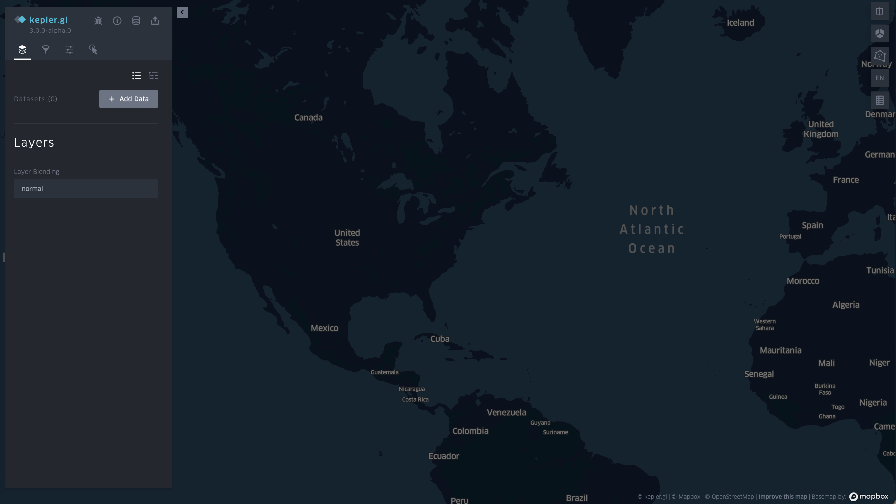
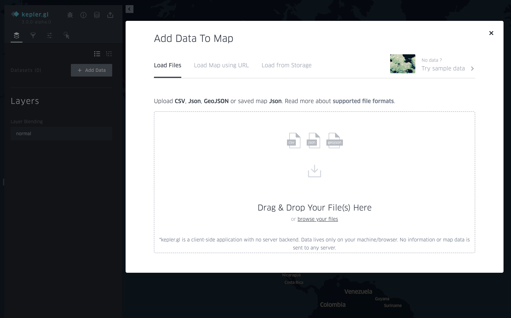
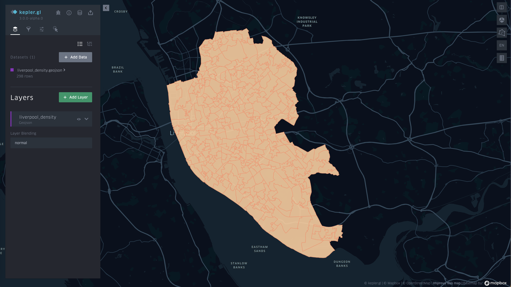
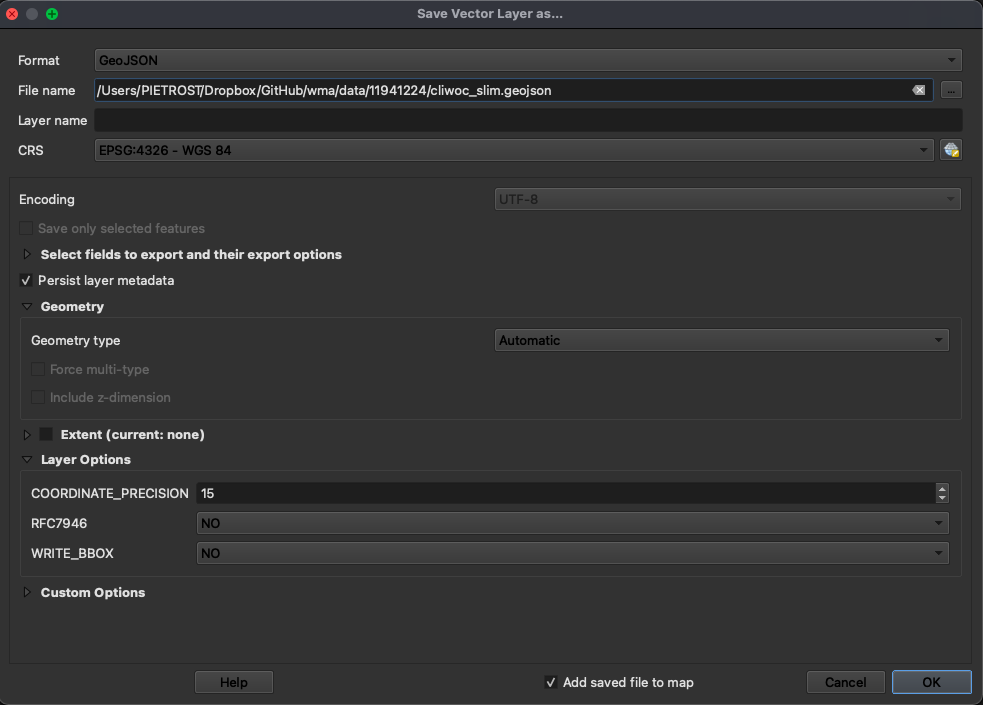
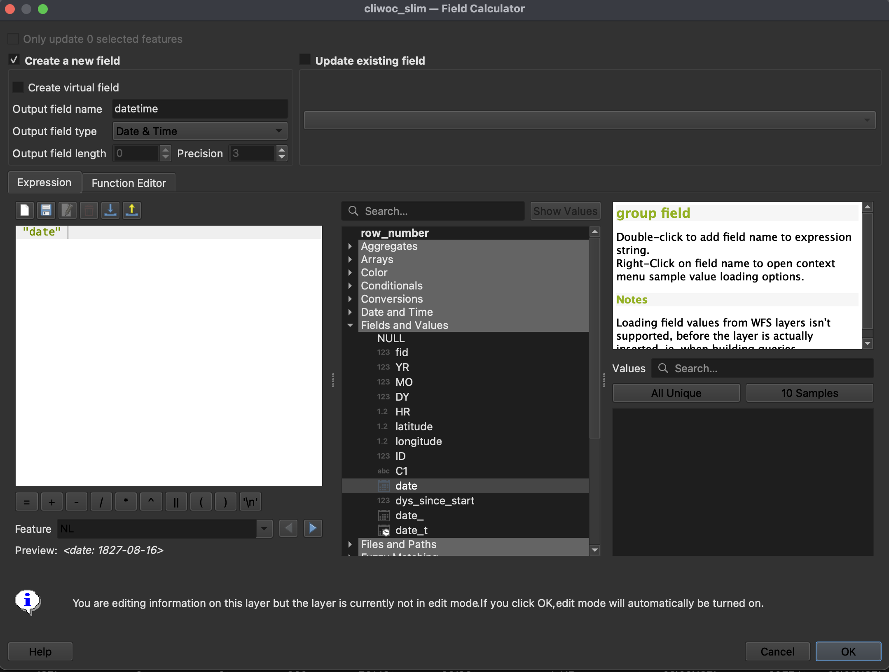
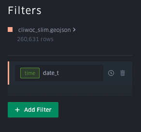
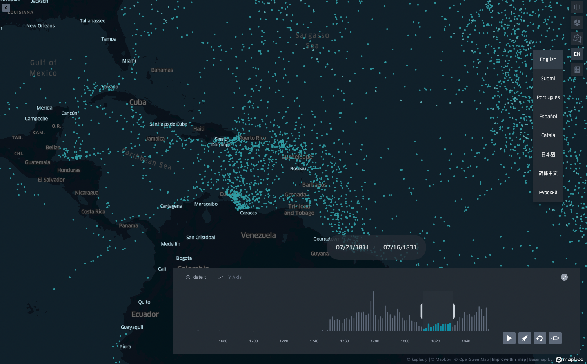

6 Interactivity
Elisabetta Pietrostefani
Lecture: Interactivity
Lab: Designing for interactivity with Kepler.gl
6.1 Lecture
Slides can be downloaded here
6.2 Lab
In this lab, we are going to get our hands dirty and play with different elements that allow us to make a map interactive. We will do so using Kepler/gl, which makes possible (and even fun!) to work interactivity into a map in different ways.
As we go through the hands-on aspect of this block, please keep the lecture slides handy and revisit them as much as you need to. As always, the real challenge is not to learn how to use a piece of software, but how to apply conceptual notions in a practical context.
To complete this lab, you will require the following:
- The internet
- Kepler.gl
6.2.1 Getting to know Kepler.gl
We will use Kepler to quickly be able to make web maps and explore how you can build interactivity in web maps.
Let us start by open up Kepler.gl
You should see a dashboard that looks more or less like:

To start understaning the main features, you can create a “New Map” (either from the dasboard or the “Maps” section, you will be able to find that button), and add the imd2019 dataset we used for Lab 6 (remember, you will find it on the “Shared with you” tab). This will take you to a new page that looks roughly like:
We will use some density data you can download here

Once the dataset has been uploaded, it shows under Layers on the left-hand side panel.

Explore the Kepler.gl interface.
Let’s walk through the basics of Kepler.gl as a (web) GIS:
Basemap: pick your background
Main layer: focus on style for now
STYLE: fill colour, outline, radius
POP-UP: Tooltips
LEGEND
There is lots of documentation to help you here.
6.2.2 Interactivity
Now let’s remember the building blocks of interactivity we have learnt in the lecture. We will demonstrate in bold those that we will work through in the lab:
Filtering
Pan
Zoom
Subset
Perspective
Volume
Tooltips
Split
Animate
To demonstrate animations, we will use another dataset we have enountered in the past, the CLIWOC ship logs:
https://figshare.com/articles/CLIWOC_Slim_and_Routes/11941224
We will work with individual logs (cliwoc_slim) to create an animation of the logs, for example just showing expeditions between certain date, as in this example of expeditions into the Caribbean.
Date Prep
First we need the data in a geojson format and to make sure that the time variable is in the correct date-time format. For this we will need to rely on QGIS or R.
In QGIS there are two steps:
- Import the cliwoc_slim.geopackage as save as geojson

- Change the date variable to a date and time variable. If you don’t do this, kepler.gl won’t recognize it as a date.

Back to Kepler.gl
- Once this is done you can import that data to Kepler.gl.
- Inspect the data, focusing on the columns (attributes).
- Create a filter by date (or additional filters).

Notice the time slider showing on the lower right corner.

Exercise
Now we know the mechanics of interactivity in Kepler.gl, let’s show off! Pick whichever you want first, and have a go at the following maps:
An animation of global trade over time A map that lets you pick a given country and display its main routes
A map that lets you identify the vesel ID (id), date, and country of ships around Cape Town
A choropleth where you can select routes by their length in days
An animation of each route in the region around Jakarta
A map that allows you to select a single route, zoom into its origin, and then pan throughout the route
Once completed, select the one you like best, and post it on Teams.
Presentation
You will then have 30 seconds to present your favorite map and hit the following points:
What the map shows What interactivity element(s) you have used One thing you think is really effective about it
Remember, 30 seconds. Short and sweet. Make them count!
6.3 References
- Tamara Munzner’s “Visualization Analysis & Design”. This lecture draws mostly on Chapter 1 (What’s Vis, and Why Do It?).
- Andy Kirk’s “Data Visualisation: a Handbook for Data Driven Design”.
- Mapbox’s Guide to Map Design.
- Geo Temporal data visualisation